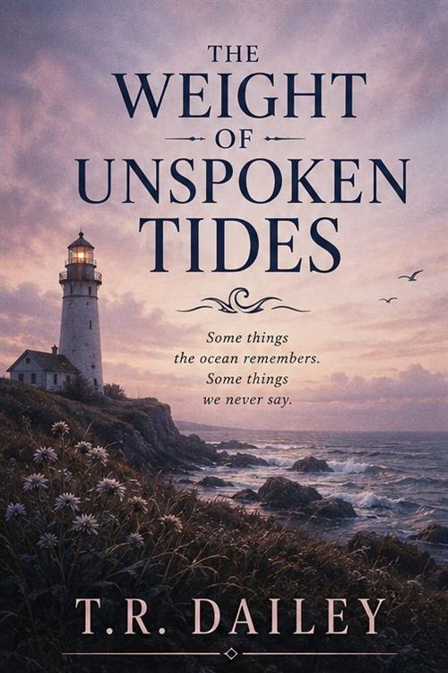

The Weight of Unspoken Tides
Standalone novel · Debut
Some things the ocean remembers. Some things we never say.
Set along the eroding bluffs of a northern coastal town, The Weight of Unspoken Tides traces three generations of a lighthouse-keeping family confronting the literal and figurative shifting of their ground. When the youngest son, an acoustic ecologist, returns home to record the dying underwater hums of the local reef, he uncovers decades of suppressed family journals tucked beneath the floorboards.
Written in lyrical, atmospheric prose, the novel explores how memory, like water, carves its own path through the people who try hardest to hold it back.
Where to find it
Retailer buttons are inactive placeholders on this demonstration site.
- Published
- April 2019
- Publisher
- Harrow & Pine
- Length
- 298 pages
- Formats
- Paperback, ebook, audiobook
- Recognition
- Debut novel · Bramwell First Book Award, 2019
An excerpt
Chapter One
The reef sounded wrong before I had any language for why.
I dropped the hydrophone off the end of the Kessler dock on the first evening, more out of habit than intention, and sat with the headphones on while the light went out of the water. You expect a reef to be loud. A healthy one is a construction site — snapping shrimp like fat popping in a pan, the grunt and creak of fish, the whole thing rattling along at a volume that startles people the first time they hear it.
What I had was a room after everyone has left it. A tick. A long nothing. Another tick.
I recorded four hours anyway, because that is the work, and because the house behind me had lights on in rooms I had not stood in for nine years.
My grandfather kept this light for forty-one years. My father kept it for six and then let the Coast Guard automate it, which the family has never once discussed aloud. Somewhere under the floor of the front room, though nobody had told me yet, were eleven notebooks in his hand.
The sea takes the bluff at about a foot a year. It is patient about it. So were we.
Praise
What they said
-
“A debut of remarkable patience. Dailey lets the silence do the work, and by the final chapter that silence is deafening.”
Coastal Letters -
“A novel about listening — to reefs, to floorboards, to the people who stopped speaking a generation ago. It is very nearly perfect.”
The Vantage
These review quotations are fictional and were written for this demonstration site. They are not attributed to any real publication.